Mailing lists in Power Automate
skills
beginner
Power Automate
Previous attendees have said…
- 13 previous attendees have left feedback
- 100% would recommend this session to a colleague
- 92% said that this session was pitched correctly
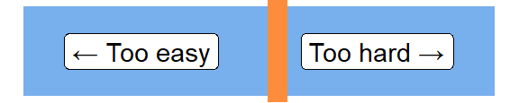
Three random comments from previous attendees
- Starting with the worst-possible scenario in PA is a good idea! Perhaps in the bumph advertising the course, instead of saying “should have some familiarity”, it could say “should have spent time tearing own hair out over a PA or two recently”. The course moves quickly but it is necessary to pack that much good information into a couple of hours.
- Brendan does a good job describing the errors you may come to with Power Automate and talking people through how to over come them.
- These session are great and run at a pace about right. Brendan is always happy to help with queries and goes through issues people might have,
Aim
- build a simple mailing list:
- based on Microsoft Lists
- with subscribe/unsubscribe forms built in Forms
- so that we can subscribe/unsubscribe/send out a mailshot via Power Automate
- we’ll give you some practical Power Automate experience
- and identify some common pain-points
General principles
- work incrementally
- keep names simple (form/list/flow names are all cake xxxx, variables are single-word, lowercase…)
- understand the way that Lists understands names
- test and check and test and check and test…
Setup
- make an Excel table
-
name,email,subscribed,cake
-
- make a new List by uploading that Excel table 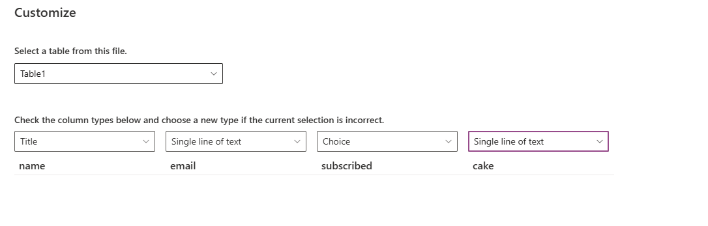
- check the data types
- beware the
Titlecolumn. That’s roughly an index: we’ll useTitleto hold our email addresses (as we’ll check membership etc by email)
Tweak your list
- now add
subscribed/not_subscribedchoices to yoursubscribedcolumn
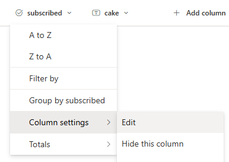
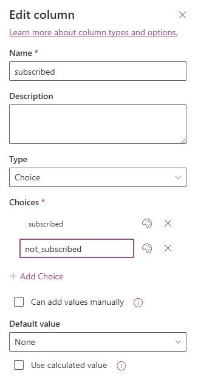
Make two forms
- make a new Form for subscriptions 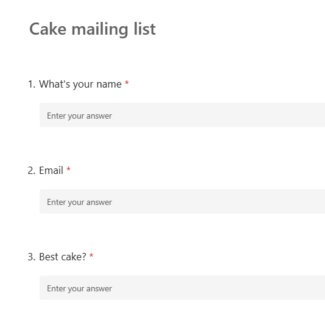
- make a second, unsubscribe, form with email alone
- note about form ID: the right way to identify your Forms 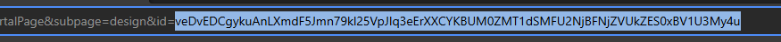
Subscription flow
- select
Build an automated flow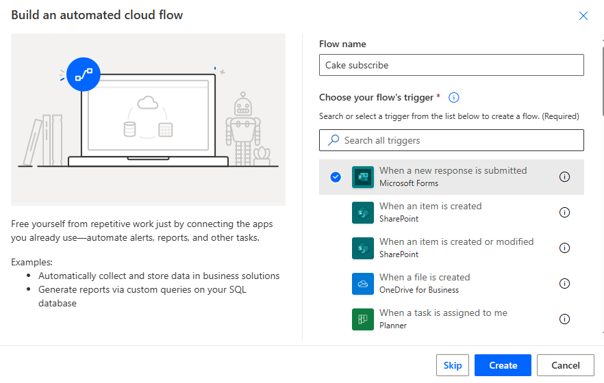
Link the flow trigger to your form
- your new flow should be populated with a response block 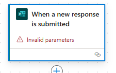
- use the form ID of the subscription form as a custom value in the
Form IDfield 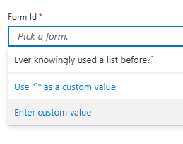 - that will leave Power Automate ‘watching’ your subscription form
Then retrieve the form response details
- Add a
Get response detailsblock 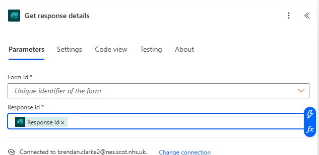 - then populate as per the previous step. This retrieves the relevant information from your subscription form
Create a new List Item
- now we’ll pass the form information to Lists
- Create a
Create itemblock 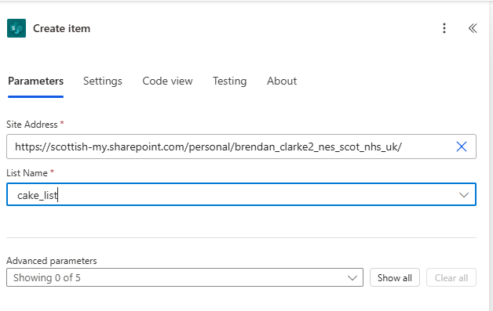 - you’ll need your List address 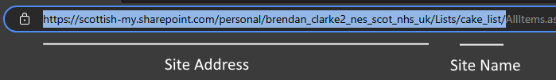
- now test - it should create a blank List item when you submit something into the form
Populate specific values
- now we map the Form fields to the columns in our List 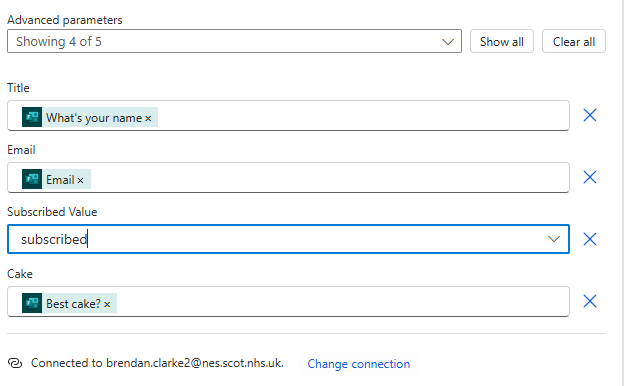
- the test now should be more interesting. Ensure that everything is being sent to the right column
Unsubscribe
- create a new Flow, with same two response blocks as previously
- make sure those link to your unsubscribe form
- then add additional blocks:
Get ItemsandUpdate item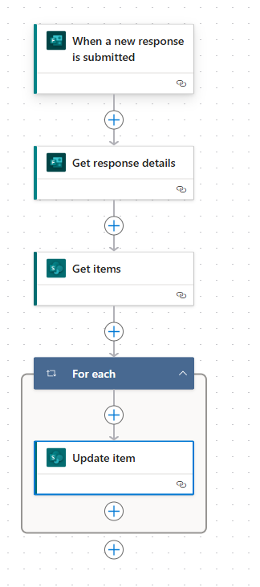
Update item
- start with your
Update itemblock as follows: 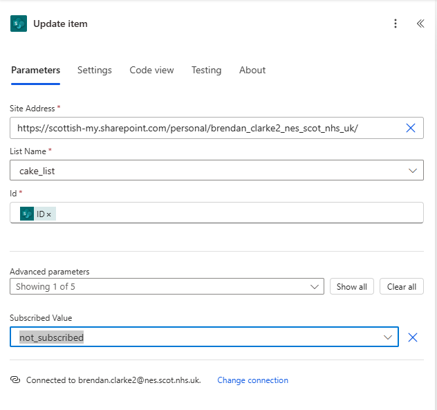
Update item fails??
- I’d expect that to fail…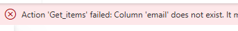
A digression: List names
- Lists stores column names in an aggravating way:
- there’s the Name, which is the name you see in the column header
- but there’s also the Field name, which is the proper-actual-real name of the column, as far as Lists is concerned
- I think field names are immutable, so this bad design is probably a kludge to let people rename columns
- your email column doesn’t work because we need to use the Field name
Fixing the field name
- find the field name in Lists from
Settings > List Settings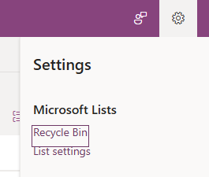 - then click on the column name 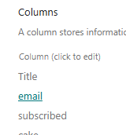
- the end of the URL should give the proper field name 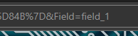
Mail flow
After that digression, the actual mailing flow is easy
new instant cloud flow triggered by a button 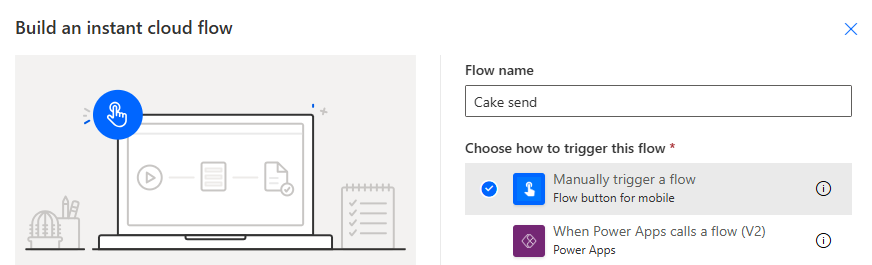
Get itemsfrom your list with a filter for subscribed - something likefield_3 eq 'subscribed'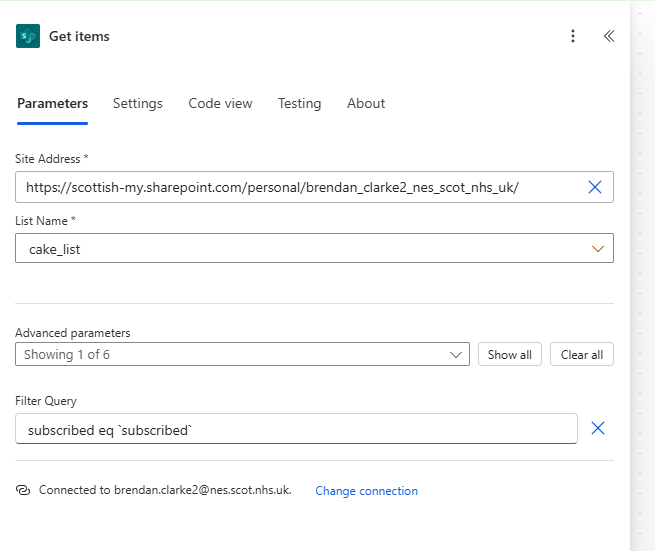
Compose a message
- there are several different email blocks you can try: 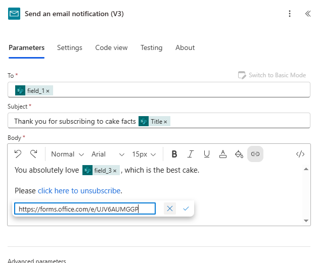
Test and check
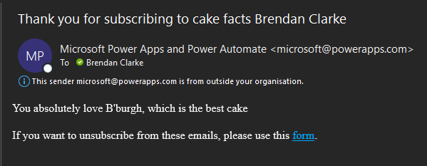
Bonus ball: prevent redundancy
- you can tweak your subscription flow to allow people to update their details and re-subscribe via the subscription form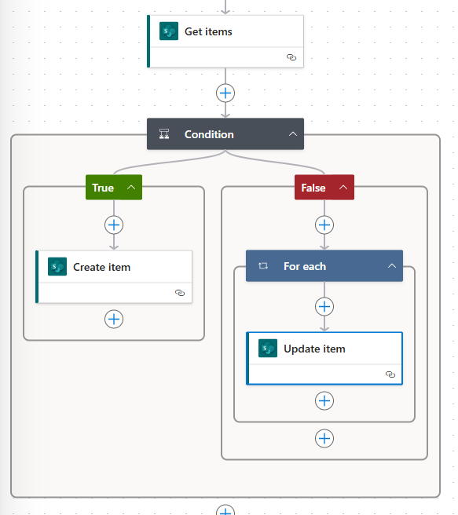
Get matching items
- on your subscription form, add a
Get Itemswith a filter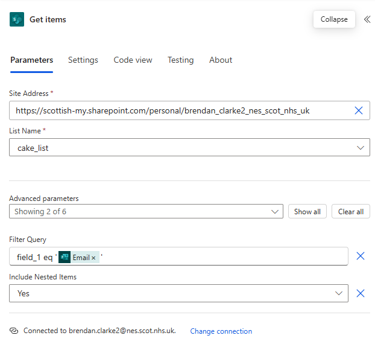
Control flow via number of matching items
- next, add a
Conditiontesting the length of the body from the matching items step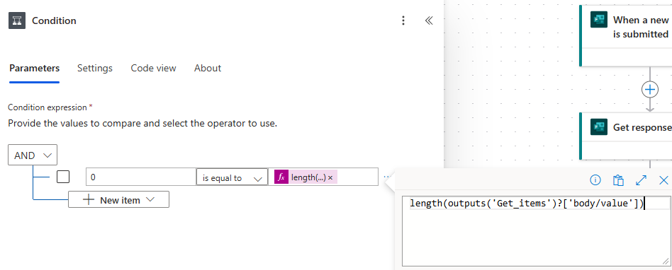
Create item is as before
- Create item (when the length = 0): 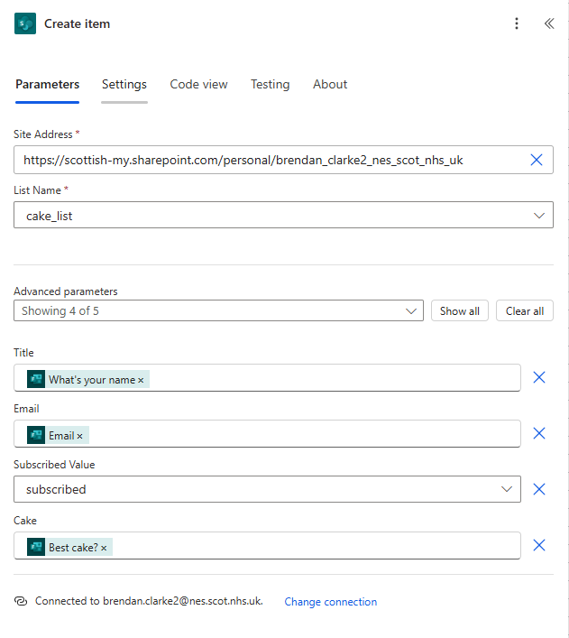
Update item
- Similar idea. The minimal version is just to change the subscribed status: 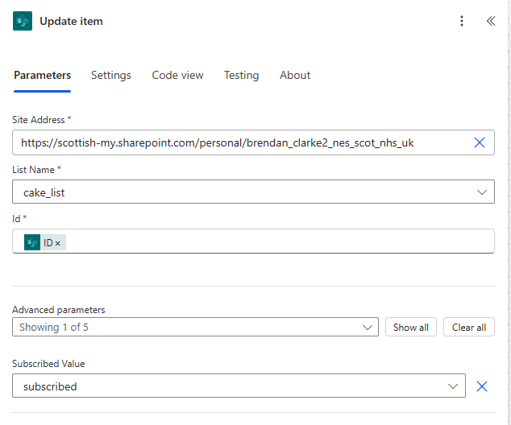
- You could also add name, cake fields etc if you were keen
Thanks
- many thanks to Maria Botha-Lopez (NES) who patiently taught me how to do this when I was new to Power Automate